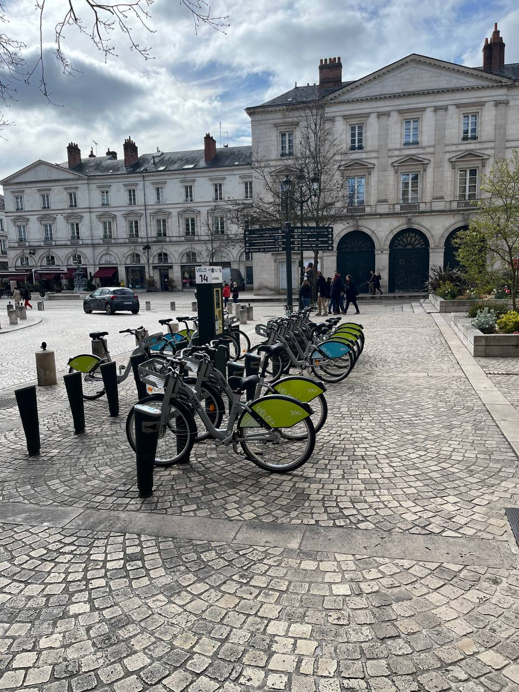

Les différents commerces :
Il existe trois principaux types de commerces, Chaque type de commerce présente des avantages et des inconvénients, vous permettant de choisir la solution la mieux adaptée à votre situation de visiteur.
- Le commerce intégré
Le commerce intégré désigne les formes de commerces en réseaux dont tous les points appartiennent au même propriétaire.
- Le commerce indépendant organisé
Le commerce indépendant organisé est une forme de commerce dans le cadre duquel le commerçant conserve son indépendance juridique et une autonomie plus ou moins forte de gestion tout en s'associant à une structure mère (franchiseur) ou à d'autres commerçants.
Les differents moyens de transports :
comment se deplacer à orléans ? Il existe 4 moyens de transport à savoir:
- En transports en commun

2 lignes de Tram totalement accessibles et une fréquence d’une rame toutes les 5 minutes en heures de pointe :
La ligne A : nord <> sud
La ligne B : est <> ouest

8 lignes à fréquence constante circulant 7j/7 jusqu’à 22h30 en semaine et 0h30 le week-end
- Location de Vélo de tourisme

Pour vos randonnées à vélo, vous pouvez compter sur l’expertise de plusieurs prestataires spécialisés dans la location pour tous vos circuits à vélo dans l’Orléanais et pour la Loire à vélo !
- Transport ferroviaire

La gare routière d'Orléans est située à proximité du centre commercial Place d'Arc et de la gare SNCF d'Orléans. Elle est utilisée pour les services de transport par autocar. Pour quitter d'une ville à une autre